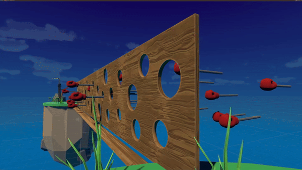

Wonky Wipeout
About
Wonky Wipout is a 3D platformer inspired by the TV show: Wipeout. This project was made over 36 hours during the Global Game Jam 2024.
Project Info
- Role: Game Programmer
- Team Size: 6
- Project Duration: 36 hours
- Engine: Unity C#
My contributions
Wall Pistons

Around the 20-hour mark, I noticed that we hadn't introduced any significant obstacles into the game yet. To add a simple challenge, I created a piston wall feature.
View scriptCharacter select

We needed the ability to select from multiple characters. Due to time constraints, I prioritized speed over scalability to ensure we could get the functionality working within the project's timeframe.
View scriptOther Features
- Animation assignment
- Local multiplayer (had no time left to implement ;c)
- Player movement
- Camera
View project on GitHub